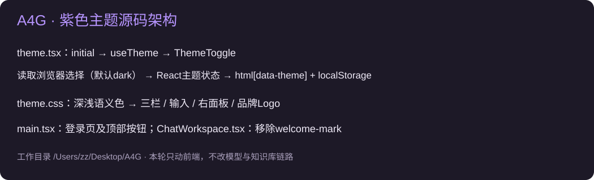

路径基于 /Users/zz/Desktop/A4G/src/frontend/src/
| theme.tsx / initial | 安全读取a4g-theme，默认dark；模块首次执行写data-theme。 |
| theme.tsx / useTheme | 切换React状态、文档主题及本地偏好；存储失败仍可切换。 |
| theme.tsx / ThemeToggle | 提供可访问名称和太阳/月亮图标。 |
| theme.css | 主题变量、紫色Logo、表面/文字/边框的语义覆盖。 |
| main.tsx / App | 导入主题，登录页和顶栏放切换入口。 |
| components/ChatWorkspace.tsx | 移除欢迎区单独的序字；维持聊天流程。 |